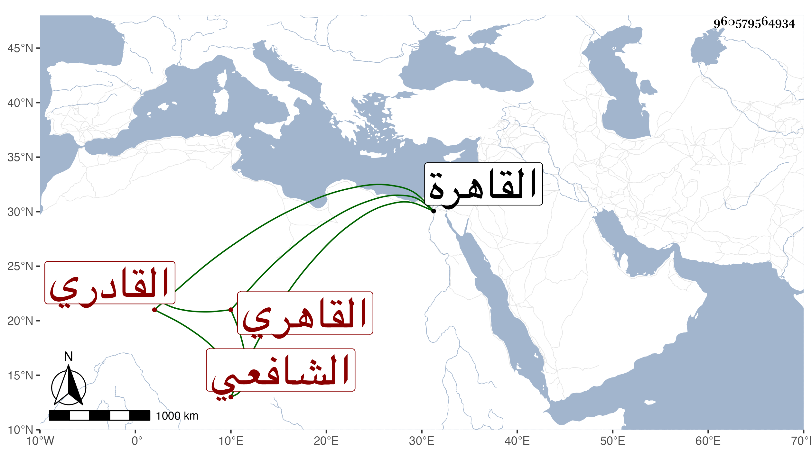

0902Sakhawi.DawLamic.ITO20230111-ara1.EIS1600.960579564934
Biography ID: 960579564934
199
محمد بن عبد الله بلكان بن عبد الرحمن المحب أبو المحاسن القاهري القادري الشافعي والد أبي الطاهر محمد الآتي . ولد سنة إحدى عشرة وثمانمائة بالقاهرة ومات أبوه وهو ابن سنة فتزوج بأمه العز القادري شيخ زاوية القادرية بباب الزهومة فرباه أحسن تربية وحفظ القرآن والعمدة وغالب المنهاج وعرض ثم اعتنى بسماع الحديث وسمع معنا على شيخنا وغيره بل قبلنا على الزركشي والشرابيشي والفاقوسي وصحب الشرف يونس القادري وتسلك وتهذب وحصل بعض الأجزاء والفوائد بخطه ، وأجاز له باستدعاء ابن فهد المؤرخ بذي الحجة سنة سبع وثلاثين خلق واستقر في مشيخة زاوية زوج أمه المشار إليها ، وكان خيرا نيرا كبير الهمة كثير التواضع حسن العشرة والفتوة مات في شعبان سنة ثمان وسبعين وصلي عليه بجامع الأزهر في مشهد حافل جدا ودفن بزاويتهم وأثنوا عليه ونعم الرجل كان رحمه الله وإيانا .
